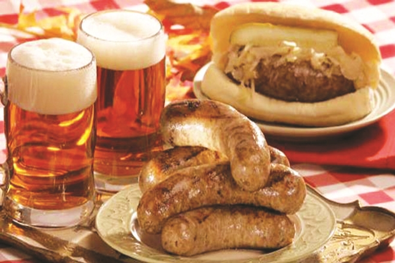

Yemek Kültürü
Alman mutfağı denildiği zaman akıllara ilk olarak bira ve patates gelmektedir. Avrupa turları içerisinden seçtiğiniz Almanya turu içerisinde kesinlikle patates ve biranın en güzel hallerini keyifle yemiş olacaksınız. Ama bu mutfak asla bunlarla sınırlı değil. Ülkenin ünlenmesini sağlayan daha birçok gizli lezzet bulunmaktadır.
Konuya direkt en ünlü yemeklerinden değil de Almanların bir gündeki öğünlerinde neyi nasıl tercih ettiğinden bahsedersek Almanya gezinizde sizlere daha çok ışık tutacağını düşünmekteyiz. O zaman tarihin çoğu anına tanıklık etmiş mutfağı biraz daha yakından tanımak çok daha yararlı olacaktır.
Kökeni Doğu Almanya olan bu mutfak Batı Almanya’dan da etkilenmiştir. Diğer ülkelerden Almanya’ya gelen farklı ırktan göçmenler ise bu mutfağın kültürünü zaman içerisinde çokça değişikliğe uğratmıştır. Günümüze geldiğimizde ise mutfaklarının 3 ana bölüme ayrıldığı görülmektedir. Bunlar; Thüringia, Saksonya ve Saksonya-Anhalt’tır. Bu bölgelerin her birinde farklı gıdalar üretilmektedir ve bunların birleşimi de Alman mutfağının geniş menülerini oluşturmaktadır.
Tüketilen temel gıdaların başında et ve türevleri gelmektedir. Kümes hayvanlarının oldukça fazla kullanıldığı mutfakta biftek ve rosto tabakları sıkça görülmektedir. Etlerse schnitsel ya da rosto şeklinde tüketilmektedir. Macarların leziz etkisini bıraktığı et yahnileri ise mutlaka denenmeye değer olacaktır. Bunlar dışında en vazgeçilmez et çeşidi kesinlikle sosistir. 1500 çeşit sosis tipini mutfaklarında barındırmaktadırlar. Balık ise pek tercih edilmemekle birlikte hazırlanacak olduğunda en çok alabalık tüketilmektedir.
Alman mutfağının olmazsa olmazlarından biride patatestir. Hatta öyle yer etmiştir ki Almanlar patatesi bir sebze olarak görmemektedirler. Genellikle et yemeğinin yanına eşlik eden patatese havuç, ıspanak ve fasulyede eklenince şık bir akşam yemeği tabağı ortaya çıkmaktadır. Patatesin her çeşidini keyifle tüketmekte olan Almanlar en çok tuzlanıp suda haşlanmasını tercih ederler. Bunun dışında biraya eşlik eden kızartması, salata yerine tüketilen püresi ve patates topları da yaygın olarak tüketilen diğer türevleridir.
600 çeşit ekmek bulunan Alman mutfağında çavdarlıdan yulaflıya birçok çeşidi yapılmaktadır. Ayrıca tereyağlı ekmeklerde Alman bir vatandaşın gününün nefis geçmesini sağlayan temel etkenlerdendir.